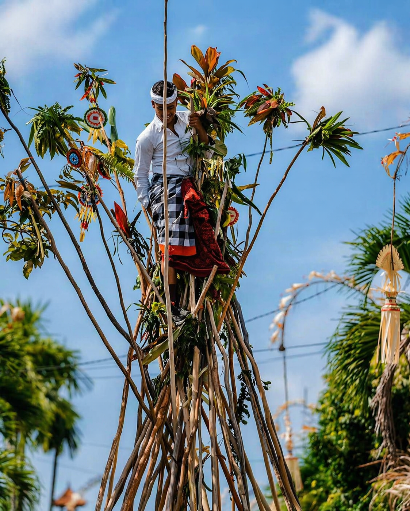
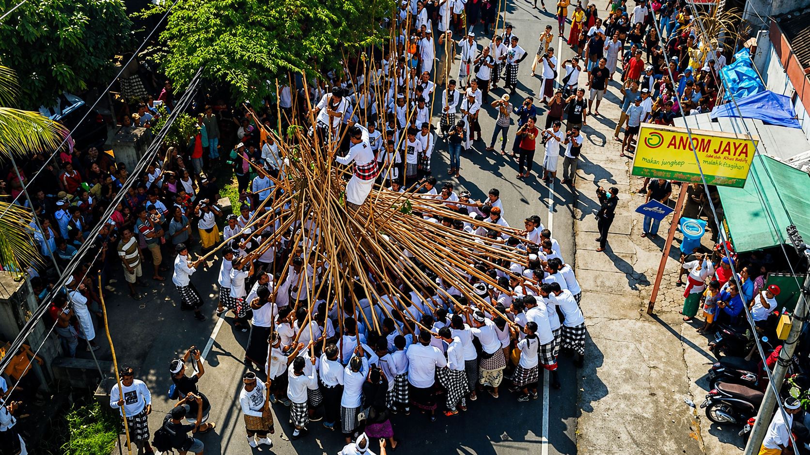
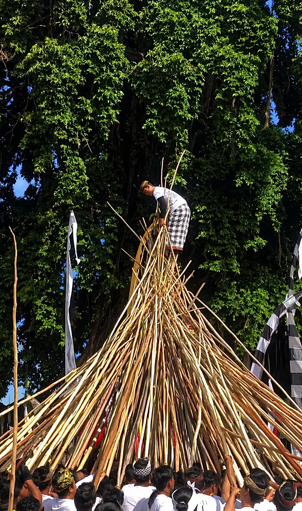

COURAGE & UNITY
A thrilling tradition from Munggu Village where towering wooden poles rise into the sky in a celebration of bravery and togetherness.
Participants carry long wooden poles and push them upward into giant cone-shaped formations above the crowd.
The atmosphere is loud, exciting, and full of movement as groups chant and compete with strength and teamwork.
Mekotek is believed to preserve community spirit and honor ancestral protection through unity and courage.
Few traditions in Bali create such a dramatic visual scene of people, motion, and towering wooden structures.
Mekotek is traditionally held every 210 days according to the Balinese Pawukon calendar.
The month changes because it follows the Balinese calendar, so dates shift each cycle.
Search the latest Mekotek celebration date, then estimate around 210 days later.
Munggu Village, Badung, is the most famous place to witness the original tradition.
Roads can become busy, so come early for parking and good viewing space.
Keep distance from active formations and follow crowd movement carefully.
Events are often outdoors under the sun, so stay hydrated.
This is a sacred community tradition, not only entertainment.


